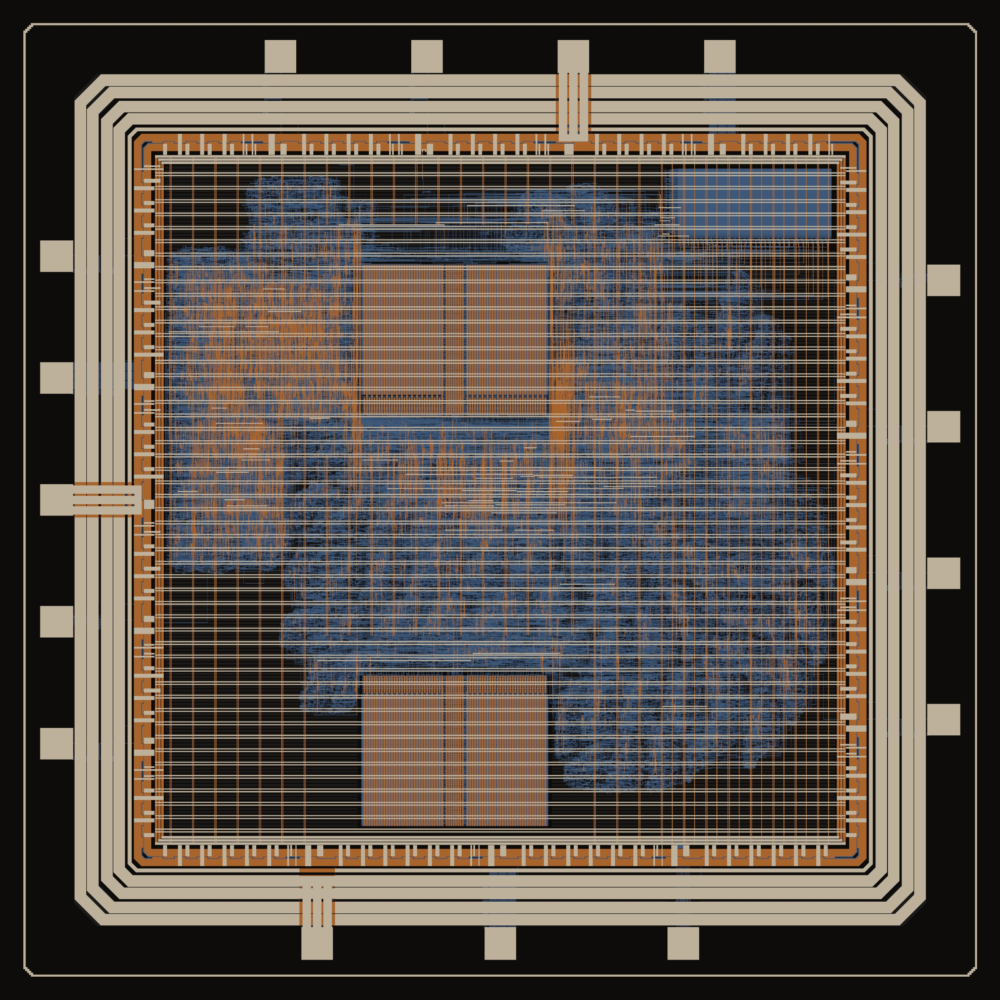

Argo: a RISC-V SoC on IHP 130 nm
A PicoRV32 core with an 8x8 int8 systolic array, taken from RTL to signoff-clean GDS on IHP SG13CMOS5L with open-source tools and KLayout-only signoff.
v2.2 signed off · tapeout through IHP pending- Die
- 2.2 × 2.2 mm
- Cells
- ~70k
- Typical corner
- 100 MHz
- Slow corner
- ~88 MHz
- DRC / LVS
- 0 / match
- Worst IR drop
- 36 mV
- Power, 0.2 activity
- 67 mW
- Pads
- 16
Architecture
Everything sits on PicoRV32's native memory bus. The CPU boots from instruction SRAM, which an SPI host fills while the CPU is held in reset. The same SPI port can also drive the systolic array directly, so the array can be tested before any firmware runs.
Design choices
- Multi-cycle multiplier, no divider. PicoRV32's fast multiplier missed 100 MHz at the slow corner, and nothing in the firmware needs division.
- A detachable test block. The 2 KB SRAM test macro has its own supply pad and a strap pin. With the strap low its clock is gated off, its outputs are masked and its address range reads 0, so a dead test macro can't hang the CPU.
- Registered CPU reset. The reset that drives the 1,024-flop register file is registered, which took it off the critical path and cut slow-corner TNS from -211 ns to -18.7 ns.
Floorplan
Metal layers from the v2.2 GDS, fill hidden. Scroll or use + and − to zoom, drag to pan, and pick a block to highlight it.

Signoff
SG13CMOS5L has no Magic support, so every physical check runs on IHP's KLayout decks. Getting there meant building a local LVS deck that black-boxes ten PDK cells that fail LVS against their own layouts, a shaped top-up fill for Metal2 and Metal3 density, and a patch to the SRAM test macro's views for one contact rule. A gate script fails the build on any nonzero count.
| Check | Result | Notes |
|---|---|---|
| KLayout DRC | 0 | IHP SG13CMOS5L deck |
| LVS | match | Standard cells and top-level wiring; pads and macros black-boxed |
| Density | 0 | After shaped top-up fill |
| Antenna (KLayout) | 0 | OpenROAD's LEF-based checker flags 239 nets; the signoff deck is clean |
| Setup, typical (1.20 V, 25 °C) | +2.82 ns | at 10 ns |
| Setup, slow (1.08 V, 125 °C) | −1.38 ns | About 88 MHz worst case. Waived; the clock comes from a pin |
| Hold, all corners | +0.035 ns | Worst at the fast corner |
| Static IR drop | 28 / 36 mV | VDD / VSS, sources at the real supply pads, 0.2 toggle rate, under the 5% budget |
| Gate-level simulation | pass | Power-on self-test on the routed netlist, both strap settings, zero-delay and typical SDF |
Every exception is written up with its reason, scope and evidence in WAIVERS.md.
The timing fix: 200 diodes on one wire
v2.1 signed off with 1,297 max-slew violations at the slow corner and −2.07 ns of setup slack. The worst offenders weren't logic cells at all. They were antenna diode pins, and they all hung off bits of mem_wdata, the CPU's write-data bus.
Counting what each bit actually drove told the story:
mem_wdata[8]: 201 sg13cmos5l_antennanp 6 mux2_1 1 nor2_1 mem_wdata[17]: 186 sg13cmos5l_antennanp 6 mux2_1 1 nor2_1
Seven real loads and nearly two hundred diodes. The bus runs across most of the core to reach both SRAMs, the array, the UART and the test block. The design repair step ran with no wire-length limit, so it never buffered those long nets, and antenna repair then fixed every long segment by adding another diode. Each diode is a load, so slew and capacitance climbed with them.
Capping the repair wire length made the tools buffer long nets instead, which fixes antenna and slew together:
DESIGN_REPAIR_MAX_WIRE_LENGTH: 600 GRT_DESIGN_REPAIR_MAX_WIRE_LENGTH: 600 PL_RESIZER_MAX_WIRE_LENGTH: 600
| v2.1 | v2.2 | |
|---|---|---|
| Setup, slow corner | −2.07 ns | −1.38 ns |
| Setup, typical corner | +2.35 ns | +2.82 ns |
| Max slew violations, slow | 1,297 | 66 |
| Antenna diodes | 2,086 | 1,266 |
| Instances | 73,708 | 70,431 |
DRC, LVS, density and antenna all stayed at zero.
The multiply that hung
Every RTL test passed. On the routed netlist, a short hello-world passed too. The array test and the power-on self-test never printed anything.
The difference between the passing and failing programs turned out to be a single instruction. I wrote a small test that prints a token after each bus access, so a timeout shows exactly where it stopped:
FAIL: timeout, partial line "S0 DW DR+ IW IR+ AW AR "
Data SRAM, instruction SRAM and the array all worked. The next step was a multiply. A probe on PicoRV32's multiplier handshake showed the counter going bad one bit per cycle:
PCPI v=1 any=1 wait=1 wq=1 mwait=0 cnt=001111x PCPI v=1 any=1 wait=1 wq=1 mwait=0 cnt=00111xx PCPI v=1 any=1 wait=1 wq=1 mwait=0 cnt=0011xxx PCPI v=1 any=1 wait=1 wq=1 mwait=0 cnt=xxxxxxx PCPI v=1 any=1 wait=1 wq=1 mwait=x cnt=xxxxxxx fin=x
Bit 0 of the counter was X from the start, and the X rippled up until it reached the "done" bit. mul_counter has no reset, which is fine in the RTL because it reloads every idle cycle. But synthesis built that reload for bit 0 as:
D = NOT( (Q AND A2) OR NOT(Q OR n) ) with A2 = 1, n = 0 when idle = NOT( Q OR NOT Q ) always 0 in silicon, X in simulation
X OR NOT X is X, so the flop fed its own X back forever.To prove the logic itself was correct, I forced that one D input to 0 while the CPU was held in reset. The counter then loaded 0011110, counted down cleanly and the multiply returned the right answer. A small script now initializes every non-reset CPU flop during the SPI boot, which models one legal power-up state. With it, the power-on self-test passes on the routed netlist in both zero-delay and SDF simulation.
So it wasn't a chip bug, but a missing reset looks exactly the same in simulation. That's why I didn't trust any other gate-level result until this one was understood.
What's next
- Tapeout and bring-up. A draft QFN32 pinout is done. Bring-up will use a Raspberry Pi over SPI and the power-on self-test as the first check of each die.
- Feeding the array. One 8x8 matrix-vector product takes about 650 cycles on the array against 6,200 on the CPU, and most of the array's time is the CPU moving data over the bus. A DMA engine is the obvious v3 change.
- Resets where they cost nothing. Adding resets to the multiplier's control flops would remove the need for testbench initialization in gate-level simulation.
- Continuous signoff. The flow, signoff gate and gate-level tests are scripted to run in CI on every change.